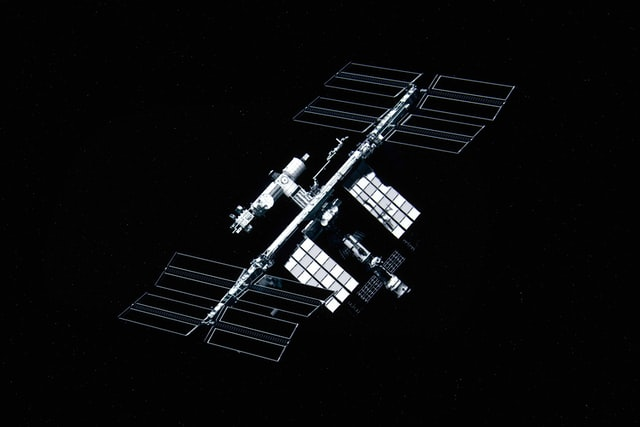

Source
Sa création et son lancement
La construction de la station est décidée en 1998 à Washington aux États Unis avec la participation de 16 nations. L’assemblage de la station s’est ensuite fait sur plusieurs années : de 1998 à 2011. En effet, il y a environ une quarantaine de vols à faire afin d’envoyer les 400 tonnes de la station dans l’espace.